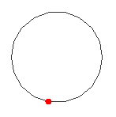

Agents
- Episode 11 (We 2/12, 2:15–4:00 PM): Agents 1 (Giulio)
- Episode 12 (Fr 4/12, 10:15 AM–12:00 PM): Agents 2: Reinforcement Learning and Robots
Due at your exercise session this week: Week 5 exercises
- Running a Real Transformer in Three Lines (programming) (1p)
- Running a Local Language Model with Ollama (0.5p)
- NanoGPT: Generating Text with a Pre-trained Model (1p)
- Bonus Exercise 4: NanoGPT Fine-Tuning on Shakespeare (0p)
- Exploring a Simple Autoencoder with TensorFlow (2p)
- Detecting AI-Generated Images (1.5p)
This week's exercises are due at your exercise session in Week 7.
The Kaggle competition: Customer Churn closes Sat 5/12 (end of day, Helsinki time). Results at the lecture on We 9/12.
| Theme | Objectives (after the course, you ...) |
| Agents |
|
Agents, reinforcement learning, and robots
Overview: from models to decisions
Week 5 examined how neural models represent context, generate content, and adapt to tasks. A capable model is not yet a complete agent: someone must decide what it may do, how it interprets observations, how it chooses actions, and when it should stop. This week studies that larger system. We use a campus delivery robot as a running example, while comparing it with game-playing agents and tool-using language models.
| Question | Concept introduced | Why it is needed |
|---|---|---|
| What should the system achieve, observe, and change? | Rational agents, PEAS, environment properties | Specify the task before choosing a method. |
| How is action organized? | Reflex, stateful, planning, and learning architectures; tool loops | Connect models, memory, decisions, and execution. |
| How can we describe consequences over time? | Markov decision processes, policies, and return | Make the sequential decision problem precise, including uncertainty and delayed reward. |
| How can experience improve decisions? | Value functions, Q-learning, exploration, and other RL families | Learn which actions lead to better long-term outcomes when the answer is not supplied as a label. |
| What changes when others act or the agent has a body? | Multi-agent interaction, perception, planning, and control | Address changing partners, partial observations, and physical consequences. |
These are connected questions, not a recipe that every agent must implement in full. A rule-based controller may not learn; a planner may use a known model; an LLM agent may use tools without online RL. The core learning goal is to explain these distinctions and work through a small sequential decision problem. The linked research papers and advanced algorithm families provide optional depth. The later ethics material examines the broader questions of goals, responsibility, and human authority.
An agent is a system that perceives an environment and acts in it. This definition covers a thermostat, a chess program, a delivery robot, and an LLM that chooses tools. The important shift is from predicting an answer to selecting an action whose consequences change what happens next. An agent therefore operates in a loop: observe, update an internal state, choose an action, and observe the result.
Rational action under limited information
A rational agent chooses the action expected to perform best according to its performance measure, given what it has perceived and what it knows. Rational does not mean omniscient or morally good. A route planner can be rational while choosing a road that later becomes blocked; it acted on the information available. Nor does rationality imply unlimited computation. Real agents have deadlines, finite memory, incomplete models, and limited energy. Bounded rationality asks what good action is possible within those limits.
Specifying the performance measure is therefore a design decision, not bookkeeping. A delivery system rewarded only for speed may drive dangerously; a chatbot rewarded for engagement may prolong an unhelpful conversation. Proxy measures are useful because goals such as “help the user” are difficult to calculate, but optimizing a proxy can produce unintended behaviour. This is the beginning of the alignment problem: how can the behaviour produced by an objective remain consistent with human intentions and constraints?
Specifying a task with PEAS
Before choosing an algorithm, an agent designer should specify the task. A useful checklist is PEAS: Performance measure, Environment, Actuators, and Sensors. Consider an autonomous campus delivery robot. Its performance measure might combine successful deliveries, travel time, energy consumption, comfort around pedestrians, and avoidance of collisions. Its environment includes paths, doors, lifts, people, weather, and other vehicles. Its actuators include wheels, brakes, a compartment lock, lights, and perhaps speech. Its sensors may include cameras, lidar, wheel encoders, GPS, inertial sensing, and signals from the delivery compartment.
PEAS exposes assumptions that are otherwise easy to hide. “Deliver quickly” is not yet a sufficient objective: how are failed deliveries counted, how much delay is acceptable near pedestrians, and who may open the compartment? Similarly, a tool-using research assistant needs more than a language model. Its environment includes documents, databases, websites, user instructions, and institutional policies; its actuators may include search, file creation, code execution, and messaging; and its sensors include prompts, tool outputs, permissions, and error messages.
| Agent | Performance | Environment | Actuators | Sensors |
|---|---|---|---|---|
| Campus robot | Safe, correct, timely delivery | Paths, buildings, people, weather | Drive, stop, signal, unlock | Camera, lidar, GPS, encoders |
| Tool-using assistant | Correct and useful completion within limits | User, files, services, policies | Respond, retrieve, calculate, call API | Prompt, memory, results, errors |
| Game agent | Expected score or probability of winning | Board, rules, opponent | Legal moves | Current state or observation history |
What kind of environment?
Task environments differ along dimensions that strongly affect architecture. An environment is fully observable when the agent can access all state relevant to its decision, and partially observable when observations are incomplete or noisy. It is deterministic when an action and state fix the next state, and stochastic when several outcomes remain possible. In an episodic task, one decision does not affect later cases; in a sequential task, current action changes future choices. Environments may also be static or dynamic, discrete or continuous, known or initially unknown, and single-agent or multi-agent.
Chess is fully observable and discrete, but adversarial and sequential. Driving is partially observable, stochastic, continuous, dynamic, and multi-agent. Document classification is often treated as episodic and static. An LLM agent working on a live software repository is sequential and partially observable: a file may change between observations, tools may fail, and another developer may edit the same code. Recognizing these properties prevents us from applying a solution designed for a clean puzzle to a changing real environment.
A language model maps context to likely tokens. An agentic system places such a model inside a loop with memory, tools, an action policy, observations, and stopping conditions. The model may propose an action; the surrounding system validates and executes it. Calling an API is not magically intelligent: it expands what the system can affect and therefore increases the need for permissions, monitoring, and recovery.
Reading: Russell and Norvig, Artificial Intelligence: A Modern Approach, 4th ed., Chapter 2, develops the agent framework, PEAS, and environment classifications used here.
Agent architectures
A simple reflex agent uses condition–action rules: if the temperature is low, turn on heating. It is fast but fails when the current observation does not reveal everything relevant. A model-based agent maintains an internal state—such as an estimate of where a robot is—and updates it as observations arrive. A goal-based agent evaluates actions by whether they reach a desired state, often using search or planning. A utility-based agent compares trade-offs among outcomes, for example speed, safety, energy, and comfort. A learning agent changes its behaviour from data or experience. Practical systems combine these ideas rather than fitting one box.
| Architecture | Question it answers | Typical limitation |
|---|---|---|
| Reflex | What rule matches now? | No memory or foresight |
| Model-based | What state am I probably in? | The model may be wrong |
| Goal/utility-based | Which future outcome is preferable? | Planning can be expensive |
| Learning | How should behaviour change with experience? | Needs suitable feedback and safe exploration |
Modern LLM agents often implement a repeated plan–act–observe cycle. The model receives a goal and current context, proposes a tool call, receives the tool result, and continues until it returns an answer or reaches a stopping rule. Useful components include a tool registry, working memory, longer-term retrieval, a planner, and an evaluator. Reliability comes from engineering the whole loop: typed tool interfaces, least-privilege permissions, time and cost limits, validation of outputs, logging, and human approval for consequential actions.
Memory, planning, and tools in LLM agents
An LLM has a finite context window, not a durable autobiographical memory. Agent systems therefore distinguish several forms of memory. Working memory holds the current goal, intermediate results, and recent observations. Episodic memory stores previous trajectories or task outcomes. Semantic memory retrieves facts and documents, often through embeddings. Procedural memory is represented by instructions, tools, code, or learned policies. More memory is not automatically better: irrelevant retrieval can distract the model, stale information can conflict with the present environment, and stored material may contain sensitive data.
Planning can also take several forms. A model may produce a complete plan before acting, alternate one reasoning step with one tool call, generate several candidate plans and compare them, or use a separate evaluator to decide whether progress is adequate. Long plans can become obsolete after the first unexpected observation, while purely reactive action may lose the global goal. Effective systems often combine a coarse plan with frequent replanning.
A tool converts a generated symbol into an external action. Its interface should therefore specify required arguments, valid types, possible errors, side effects, and permissions. Reading a calendar and deleting an event must not receive the same authority. A robust execution layer validates arguments, asks for confirmation when consequences are difficult to reverse, records what happened, and returns structured observations. The model may be fluent, but the tool layer determines what the system can actually change.
Why agentic loops fail
Agent failures are often failures of the loop rather than failures of language generation alone. The model may select the wrong tool, use a correct tool with incorrect arguments, misread a result, repeat an action indefinitely, stop before verifying success, or continue after the goal has been achieved. Retrieved documents or web pages can also contain instructions that conflict with the user’s goal—a form of prompt injection. Because the observation is text, the model may not distinguish trusted system instructions from untrusted content unless the architecture makes that distinction explicit.
| Failure | Example | Engineering response |
|---|---|---|
| Wrong action | Searches when calculation is required | Tool descriptions, routing tests, evaluator |
| Invalid action | Malformed API arguments | Typed schemas and validation |
| Unsafe authority | Sends or deletes without confirmation | Least privilege and approval gates |
| Looping | Repeats the same unsuccessful call | Step, time, and cost budgets |
| False completion | Claims success without checking result | Explicit success tests and verification |
| Untrusted instruction | Web content redirects the agent’s goal | Provenance, isolation, and policy checks |
Research example: Yao et al. (2023), ReAct, studies interleaving reasoning and actions in language-model systems. It illustrates an architecture, not a guarantee of reliable reasoning or safe execution.
Reinforcement learning: why actions require a different learning problem
The agent architectures above explain how a system can select and execute actions. They do not yet explain how it learns which actions to select. A hand-written controller or a planner with a supplied model may act without reinforcement learning. We introduce RL when we want to improve behaviour from the consequences of interaction, instead of supplying the correct action for every situation.
Consider our campus delivery robot. At a junction it can take a short busy route or a longer quiet one. It may also need to charge before accepting another delivery. There is usually no labelled example saying which action is best at every instant. Moreover, the robot's action affects the situations it will encounter later. This makes the problem different from classifying a fixed image: choosing an action also changes the future data and opportunities.
Delayed consequences make credit assignment important. A robot that runs out of battery may have made the decisive mistake several actions earlier, when it passed a charger. A chess move can influence a game whose reward arrives only at the end. The learning problem is to connect actions with subsequent outcomes, not simply to reward whatever happened immediately before success.
Why introduce a Markov decision process?
Before choosing a learning algorithm, we need a precise description of the decision problem. What information defines a situation? Which actions are possible? What changes after an action, and what counts as a desirable outcome? A Markov decision process (MDP) organizes these questions in one model. It is a framework for stating a problem, not a learning algorithm and not a kind of neural network.
| Element | Question it answers | Robot example |
|---|---|---|
| State s | What situation matters for predicting what comes next? | Location, battery, delivery status and relevant conditions of the route. |
| Available actions a | What choices can the agent make? | Take a route, wait, charge or complete a delivery. |
| Transition model P(s′ | s,a) | How might the next state depend on this action? | A busy route may take longer; moving reduces battery; waiting may allow a path to clear. |
| Reward R | What immediate numerical feedback does a transition provide? | A delivery bonus, time or energy cost, and penalties for unwanted events. |
| Discount factor γ | How are later rewards weighted? | How the specified objective balances immediate and delayed outcomes. |
A common discounted formulation describes the task using (S, A, P, R, γ), together with a starting-state distribution and any termination rules. Rewards may be stochastic; more generally the model specifies a joint distribution of the next state and reward. Writing the elements down does not require the robot to know their probabilities already. They describe what the environment does; an algorithm may have access to that model, estimate it, or learn without explicitly representing it.
The Markov assumption says that, conditional on the current state and action, the next-state and reward distributions do not require the full earlier history. This is why the definition of state matters. Location alone is inadequate if the outcome of a move also depends on remaining battery. Adding battery makes the representation more informative. “Markov” therefore does not mean that the past is irrelevant; it means the state summarizes the past information relevant to this prediction.
State is not the same as observation. A camera view may hide a pedestrian behind a door or fail to reveal how slippery a path is. This motivates a partially observable model, often a POMDP. The agent may act using its observation history, a learned memory or a belief state, a distribution over possible underlying states. This connects to the earlier probabilistic-reasoning material. For the first numerical example we deliberately assume an observable, small state space.
Reading: Sutton & Barto, Reinforcement Learning: An Introduction, Chapter 3, gives the MDP formulation. Russell & Norvig, Chapters 16–17, connect utility and sequential decisions. An MDP is appropriate for a single decision-maker; chess against a fixed opponent policy can be viewed this way, while strategic interaction between adapting players calls for game-theoretic or multi-agent models.
From the model to the objective: policies and return
Once the task is specified, we can state what the agent should learn. A policy specifies its action selection, often written π(a | s) in a fully observed MDP. A deterministic policy selects one action for a state; a stochastic policy gives probabilities. The policy is the behaviour rule. It is distinct from the transition model, which describes the environment's response.
The objective is expected return, not necessarily the next reward. For a discounted episode, Gₜ = rₜ₊₁ + γrₜ₊₂ + γ²rₜ₊₃ + ..., stopping at termination. With γ = 0, only the next reward matters. Values closer to 1 give later consequences greater weight; some finite episodic formulations use γ = 1. Discounting is a modelling choice, not a substitute for safety constraints.
Worked comparison: suppose a short route yields rewards −1 and then +10, while a longer route yields −1, −1 and then +10. At γ = 0.9, their returns from the start are −1 + 0.9 × 10 = 8 and −1 − 0.9 + 0.9² × 10 = 6.2. The first route is preferable under these assumptions. If its chance of a costly failure is substantial, the comparison must include that uncertainty. Return makes the comparison explicit; it does not determine which reward design is ethically acceptable.
Check your understanding: why might the robot rationally choose to charge, even though charging costs time immediately? Because it can enable later rewards that the current battery would make unreachable. The state, transition dynamics and return must be considered together.
Planning and learning answer different questions
If the transitions and rewards are known, the agent can plan by computing the consequences of candidate actions. Dynamic programming is one family of methods for solving known finite MDPs. If the model is unknown, the agent must learn from experience. Model-based RL estimates a model and uses it for planning. Model-free RL learns values or a policy without first building an explicit transition model.
This distinction prevents a common confusion: introducing an MDP does not commit us to model-based RL. Q-learning can operate in an MDP while learning directly from sampled transitions. Conversely, a system can solve a supplied MDP by planning without learning from new interaction. Search from earlier weeks and RL are therefore related tools, not interchangeable names.
Why value functions help with delayed reward
Comparing every possible future route from scratch would be expensive. A value function summarizes the expected return from a state under a policy. The action-value function Qπ(s,a) asks how much return to expect if the agent takes action a in state s and then follows π. The optimal action-value function Q*(s,a) instead assumes optimal continuation. Distinguishing the policy being evaluated is important: a promising state can have low value under a poor continuation policy.
The Bellman principle decomposes long-term value into an immediate reward and discounted continuation value. For example, under a policy, Vπ(s) = E[rₜ₊₁ + γVπ(sₜ₊₁) | sₜ = s]. The expectation includes the action chosen by π and the uncertain transition. This recursive relationship is useful because it connects neighbouring decisions rather than requiring a complete trajectory to be treated as an unrelated object.
We now introduce Q-learning because it turns this relationship into a simple update from experience. It is a concrete example of learning an action comparison when the full transition model is unavailable. This motivates the method before introducing its formula.
Q-learning: learning an action-value estimate from one transition
For a small discrete task, store one estimate per state–action pair in a Q-table. After taking action a in state s, observe reward r and next state s′. Form the target r + γ maxₐ′ Q(s′,a′) and move the old estimate toward it:
Q(s,a) ← Q(s,a) + α[r + γ maxₐ′ Q(s′,a′) − Q(s,a)]
The bracketed term is the temporal-difference (TD) error. The learning rate α controls the update size; γ controls the weighting of later reward. They have different roles. At a true terminal state, the continuation value is zero. Time-limit truncation is not necessarily a terminal event, so implementations must distinguish the two.
Suppose moving right from a state beside the goal gives reward 10 and terminates the episode. If the old Q-value is 2 and α = 0.5, the target is 10 and the new estimate is 2 + 0.5(10 − 2) = 6. Now consider the preceding state: moving right gives reward 0 and reaches the state whose best estimate is 6. With γ = 0.9, the target is 5.4. If the old estimate is 1, its update is 1 + 0.5(5.4 − 1) = 3.2.
This is how information about a later goal can influence an earlier action estimate. The intermediate estimate 6 is not the true terminal reward: it is the current estimate after one update. More experience can change it. Convergence guarantees for tabular Q-learning require assumptions such as sufficient exploration and suitable learning rates; they do not automatically transfer to arbitrary neural-network approximations.
Primary reference: Watkins & Dayan (1992), Q-learning. For a worked textbook treatment, see Sutton & Barto, Chapter 6.
Why learning requires exploration
The robot cannot learn which route is better if it always takes the route that initially looks best. Exploitation uses current knowledge; exploration gathers information that might improve future decisions. An ε-greedy behaviour rule usually selects a currently best action, but with probability ε samples an action to explore. Exploration is a property of data collection, not an extra reward label.
Random exploration is acceptable in a small simulator but can be dangerous around people or expensive equipment. Constrained actions, simulation, demonstrations and human oversight may be needed. Also inspect the reward: rewarding distance travelled rather than successful deliveries could encourage pointless movement. A precisely specified reward can still encode the wrong goal. See Amodei et al. (2016) for concrete problems involving reward design and safe exploration.
How the main RL method families fit together
Q-learning provides a starting point, not the only way to learn action. The next table organizes methods by what they represent and update. These categories overlap: an actor–critic can use a learned model, and a value-based method can use a neural network.
| Family | What is learned? | Why introduce it? | Important limitation |
|---|---|---|---|
| Value-based | State or action values | Compare candidate actions through predicted return, as in Q-learning. | Maximizing over many continuous actions can be difficult. |
| Policy gradient | Parameters of an action-selection policy | Optimize behaviour directly, including stochastic or continuous actions. | Sample-based gradient estimates may have high variance. |
| Actor–critic | A policy and a value estimator | The critic supplies a learning signal for the actor. | Errors in the critic can mislead the policy update. |
| Model-based | Dynamics and possibly reward, used with planning | Predict consequences and reuse experience through a model. | A planner may exploit inaccuracies in its model. |
On-policy versus off-policy is a separate distinction. On-policy methods learn about the policy producing their data. Off-policy methods can learn about a different target policy. Q-learning's update uses a greedy continuation even when exploratory behaviour generated the transition. This makes reuse of past experience possible, but does not make arbitrary logged datasets sufficient for reliable learning.
Deep RL uses a neural network to approximate a value function, policy or model when a table is impractical. The representation-learning ideas from Weeks 4–5 now support action rather than just classification or generation. Training remains challenging: successive observations are correlated, estimated targets change during learning, and one parameter update can affect many states. Replay buffers and target networks help in methods such as DQN. They are techniques for particular algorithms, not universal requirements of RL.
Further reading: Spinning Up: key concepts and the taxonomy of RL algorithms; Mnih et al. (2015), Human-level control through deep reinforcement learning. Algorithm details beyond the Q-learning example are optional depth.
How human feedback connects RL to language models
Week 5 introduced pretrained and adapted language models. A model trained to predict text does not automatically optimize helpfulness or follow a user's intent. Human feedback can supply another training signal: people compare outputs, a model learns to predict those preferences, and a policy can be optimized using that learned reward. This is one family of approaches usually called RL from human feedback (RLHF).
Training with feedback and acting as an agent at deployment are distinct. A language model can undergo RL training and later answer without tools. A tool-using agent can execute a plan–act–observe loop without updating its weights during that interaction. Likewise, preference optimization includes methods that do not run an online RL algorithm. Separating the training method from the deployed architecture avoids treating every LLM agent as an RL learner.
Feedback is also incomplete and socially situated. A reward model can misrepresent human judgments, and optimizing its score can exploit those errors. Better preference matching does not resolve whose preferences should count or what actions are legitimate. These questions lead into alignment and the later ethics material.
Primary readings: Christiano et al. (2017), Deep Reinforcement Learning from Human Preferences; Ouyang et al. (2022), Training Language Models to Follow Instructions with Human Feedback.
Multi-agent systems
So far we treated the environment as having stable transition and reward rules. When other decision-makers adapt too, an action's result depends on their choices and learning. This motivates a multi-agent view: the delivery robot must negotiate with pedestrians and other robots, rather than treating them only as fixed obstacles.
When several agents share an environment, each agent’s outcome depends on the others. Interactions may be cooperative, competitive, or mixed. Traffic participants coordinate implicitly; auction bidders compete; a robot team may divide tasks. The environment becomes non-stationary from one learner’s perspective because other agents are also changing their policies.
Game theory provides concepts such as best response and equilibrium, while multi-agent RL studies how policies can be learned through interaction. Communication can help agents coordinate, but messages can be incomplete, strategic, or deceptive. A system of individually capable agents is not automatically collectively effective: congestion, free riding, duplicated work, and cascades of mistaken assumptions can emerge. Evaluation should therefore examine system-level outcomes—fairness, robustness, resource use, and failure propagation—not only each agent’s score.
Coordination, competition, and emergent behaviour
In a cooperative task, agents share a team reward, but assigning credit remains difficult: which agent’s action caused success? In a competitive task, improvement by one agent changes the challenge faced by others. Mixed settings contain both, as in traffic: drivers share an interest in avoiding collisions but compete for space and time. Centralized training may use information about all agents, while decentralized execution gives each agent only local observations.
Communication is an action with costs and consequences. Agents must decide what to communicate, to whom, and when. A message may reduce uncertainty, coordinate complementary roles, or create common knowledge; it may also consume bandwidth or reveal strategy. In teams of LLM agents, assigning “researcher,” “critic,” and “writer” roles can improve coverage, but it can also produce duplicated work or amplify the same misconception when all agents rely on similar models and sources.
Emergence means that system-level patterns arise from local interactions without being explicitly programmed as a global plan. Flocking can emerge from simple separation, alignment, and cohesion rules. Congestion can emerge even when every driver tries to minimize travel time. Emergence is not automatically intelligent or beneficial. Multi-agent evaluation therefore needs counterfactual tests, varied group composition, communication failures, and measurement of collective rather than merely individual outcomes.
Reading: Russell and Norvig, 4th ed., Chapter 18, introduces multi-agent decision making, cooperation, and competition.
Robots: agents with bodies
Robotics brings the preceding ideas into the physical world. The robot needs a useful state estimate before it can plan or learn a policy, and an action selected by a policy must still be executed by a controller. This is why we now separate perception, planning, and control instead of treating the agent as one neural network.
A robot closes the agent loop in the physical world. Sensors translate light, force, sound, distance, or joint position into measurements. Actuators produce motion. Perception estimates relevant state; planning selects a route or sequence of actions; control turns that plan into motor commands. All stages are uncertain. A wheel slips, a camera is occluded, an object moves, or the environment differs from training.

This embodiment creates several gaps. The reality gap separates simulation from physical deployment. The semantic gap separates sensor values from meaningful objects and situations. The control gap separates a planned motion from what imperfect hardware actually does. Robust robots repeatedly estimate, act, measure the consequence, and correct. Autonomy is therefore usually layered: low-level controllers stabilize motion, planners choose actions, and people provide goals, supervise exceptions, or share control.
Perception and state estimation
Raw sensors do not deliver a ready-made symbolic world. A camera produces arrays of intensity values; lidar produces distances; an inertial measurement unit produces accelerations and rotation rates. Perception detects objects, surfaces, people, and free space. State estimation combines uncertain measurements over time. For a mobile robot, localization estimates where the robot is; mapping estimates the environment; simultaneous localization and mapping (SLAM) tackles both together.
Combining sensors can make estimates more robust. GPS may drift or disappear indoors, cameras may fail in darkness, and wheel odometry accumulates error when wheels slip. Sensor fusion uses the different error characteristics of several measurements. The result is still an estimate with uncertainty, not ground truth. A planner should behave differently when localization is precise than when several locations remain plausible.
Planning and control
Planning operates at multiple levels. A task planner may decide to collect a parcel before going to the recipient. A motion planner finds a collision-free trajectory through configuration space. A local planner reacts to nearby obstacles. A controller continuously converts a desired trajectory into motor commands and corrects deviations. These layers run at different timescales: strategic plans may update every few seconds, while balance control may update hundreds of times per second.
Classical search remains important here. A* can plan paths on a map; sampling-based methods such as rapidly exploring random trees handle high-dimensional robot configurations; model-predictive control repeatedly optimizes a short future horizon and replans after new measurements. Learned components can improve perception, predict dynamics, or propose actions, but geometric constraints and feedback control continue to provide valuable structure.
Simulation, transfer, and shared autonomy
Physical interaction is slow, costly, and sometimes dangerous, so robots often learn or are tested in simulation. Unfortunately, a policy may exploit details of the simulator that do not hold in reality. Domain randomization varies textures, lighting, friction, mass, delays, and sensor noise during training so that no single simulated world is sufficient. System identification instead tries to make the simulator match the physical system. Real-world fine-tuning and conservative validation remain necessary.
Full autonomy is not always the most useful objective. In shared autonomy, a person supplies intent while the robot assists with execution. A wheelchair may infer the intended doorway while preserving the user’s authority; a surgical training system may guide movement without replacing the learner’s action. Assistance that is too weak provides little benefit, but assistance that is too strong can hide errors and prevent skill development. The design question is therefore not simply “human or robot?” but how initiative, information, and control should be distributed over time.
Robots also make stakes tangible. An LLM’s incorrect sentence can be checked before use; a robot’s incorrect movement can cause immediate harm. Safe deployment relies on redundant sensing, conservative operating envelopes, collision avoidance, emergency stops, testing, and clear allocation of responsibility. Human oversight must be actionable: a nominal supervisor who cannot understand or interrupt the system is not meaningful oversight.
Further reading: Dellaert and Hutchinson, Introduction to Robotics and Perception, connects the perception–estimation–planning–control pipeline; see also Russell and Norvig, Chapter 26.
Putting the pieces together
| Example | State/observation | Actions | Feedback |
|---|---|---|---|
| Tool-using LLM | Prompt, memory, tool results | Respond, search, call API | Task success, evaluator or user |
| Game-playing agent | Board or observation history | Legal moves | Score or win/loss |
| Delivery robot | Map and noisy sensors | Move, stop, manipulate | Progress, safety and energy |
The same vocabulary—environment, observation, action, policy, objective, and feedback—connects all three. Yet their engineering requirements differ because tools, other agents, and physical bodies introduce different consequences. When analysing any agent, ask: What can it observe? What can it change? What objective is actually optimized? How does it learn or plan? Where can uncertainty enter? Who can intervene? These questions are more informative than simply asking whether the system is “autonomous.”
Agency is a relationship between a system and an environment. Reinforcement learning provides one way to improve action through consequences; agentic frameworks connect models to tools and memory; robotics grounds the loop in uncertain physical reality. Capability depends on the entire loop, while safe and intended behaviour depends on objectives, constraints, monitoring, and human authority.
References and guided further reading
Start with the introductory readings below; the research papers are optional examples of how these ideas are developed and tested. Read for the question indicated, rather than trying to master every algorithm.
- Agent design and the wider picture: Russell, S. and Norvig, P. (2021), Artificial Intelligence: A Modern Approach, 4th edition. Chapter 2 covers agents; Chapters 16–17 decision making; Chapter 18 multi-agent systems; Chapter 22 RL; Chapter 26 robotics. Ask how assumptions about observations and objectives change the design.
- MDPs and RL foundations: Sutton, R. S. and Barto, A. G. (2018), Reinforcement Learning: An Introduction, 2nd edition (authors' book resources). Read Chapter 3 for states, rewards, policies, and return; Chapter 4 for planning with a known model; Chapter 6 for temporal-difference learning and Q-learning; Chapter 13 for policy gradients.
- Accessible mathematical overview: OpenAI, Spinning Up: Key Concepts in RL and Kinds of RL Algorithms. Use these to connect notation with the choices of learning values, policies, or a world model.
- Q-learning's original result: Watkins, C. J. C. H. and Dayan, P. (1992), Q-learning. Distinguish its tabular convergence assumptions from the more difficult neural-network case.
- Deep RL example: Mnih et al. (2015), Human-level control through deep reinforcement learning. Examine how a neural network, replay memory, and target network extend value learning to Atari observations.
- Evaluating learning claims: Henderson et al. (2018), Deep Reinforcement Learning That Matters. Why do random seeds, hyperparameters, and reporting choices matter when comparing methods?
- Language-model agents: Yao et al. (2023), ReAct: Synergizing Reasoning and Acting in Language Models. Identify the observations, actions, and feedback in the loop; do not confuse tool use with online RL.
- Reward design and safety: Amodei et al. (2016), Concrete Problems in AI Safety. Relate reward hacking, safe exploration, and distribution shift to the delivery example.
- Human feedback: Christiano et al. (2017), Deep Reinforcement Learning from Human Preferences; Ouyang et al. (2022), Training Language Models to Follow Instructions with Human Feedback. Track the distinction between feedback, a learned reward model, policy training, and deployment.
- Robotics: Dellaert, F. and Hutchinson, S., Introduction to Robotics and Perception, an open textbook connecting sensing, probabilistic state estimation, planning, and control. Relate each component to the embodied agent loop.
Before we can build an agent, we need a precise way to describe the job we're asking it to do. Russell and Norvig's classic recipe is PEAS: Performance measure (what counts as doing well), Environment (the world the agent operates in), Actuators (how it acts on the world), and Sensors (how it perceives the world).
As a worked example, here's the PEAS description for a robot vacuum cleaner:
| PEAS | Description |
|---|---|
| Performance measure | Amount of dirt cleaned, energy used, noise generated, time taken |
| Environment | A room (or house) with floor, furniture, dirt, stairs |
| Actuators | Wheels (steering, driving), brushes, vacuum suction |
| Sensors | Dirt sensor, bump sensor, cliff sensor, camera |
Once we have PEAS, we can also classify the environment itself along six standard dimensions:
- Fully vs. partially observable: can the agent's sensors see the complete state of the environment at every step?
- Deterministic vs. stochastic: does the next state depend completely on the current state and the agent's action, or is there uncertainty/randomness?
- Episodic vs. sequential: is each percept-action pair independent of the others, or do earlier actions affect later ones?
- Static vs. dynamic: can the environment change while the agent is deliberating?
- Discrete vs. continuous: are there a finite number of distinct states/actions, or a continuum?
- Single-agent vs. multi-agent: is our agent alone in the environment, or are there other agents (cooperative or competitive)?
For the vacuum cleaner above: partially observable (can't see dirt in the next room), stochastic (bumps and slips happen), sequential (where it already cleaned matters), dynamic (people walk through and make new mess), discrete (a finite grid of rooms and a finite action set), and single-agent (usually).
Now it's your turn. For each of the following three tasks, (a) write out a PEAS description in a table like the one above, and (b) classify the environment along all six dimensions, with one sentence justifying each choice:
- An autonomous drone delivering parcels across a city.
- A poker-playing agent at an online table with human opponents.
- A customer-service chatbot answering questions on a retailer's website.
Bonus (no extra points, just for fun): pick a job or hobby of your own and write its PEAS description. Is it harder or easier to pin down than you expected?
A learning agent improves its behavior from experience rather than following a fixed rule. We'll train a real one — no theory derivation required, the algorithm is already correctly implemented for you. Follow Gymnasium's official "Training an Agent" tutorial (Blackjack environment).
The core training loop, already provided:
for episode in tqdm(range(n_episodes)):
obs, info = env.reset()
done = False
while not done:
action = agent.get_action(obs)
next_obs, reward, terminated, truncated, info = env.step(action)
agent.update(obs, action, reward, terminated, next_obs)
done = terminated or truncated
obs = next_obs
agent.decay_epsilon()
and the agent's hyperparameters are exposed right at the top of the script:
learning_rate, n_episodes, start_epsilon,
epsilon_decay, final_epsilon.
- Run the tutorial's full script as-is (it includes built-in plotting of the learning curve — episode reward and episode length over time).
- Change
learning_rateto a much smaller value (e.g.0.001) and a much larger one (e.g.0.5). Rerun with each and compare the learning curves. - Change
n_episodesdown to a small number (e.g.1000, from the tutorial's default which is much larger). Does the agent still learn a reasonable policy? - In 4–5 sentences: what did you observe about the learning-rate extremes — does a bigger learning rate always mean faster learning? Connect this to anything similar you've seen in this course (e.g. the trade-off you saw with learning rate in gradient descent for logistic regression).
agent.update() actually doing?
It's applying the Q-learning update rule: adjust the estimated value of the (state, action) pair you just took, using the reward you got plus the best value you think you can get from here on. You don't need to derive this rule yourself for this exercise — just observe how the agent's behavior changes as you change the parameters that control how aggressively/cautiously it learns and explores.
We've talked about agentic frameworks conceptually — now let's build one you can
actually run. smolagents is a lightweight, purpose-built-for-
teaching agent library from Hugging Face. Getting a first agent running is
genuinely four lines:
from smolagents import CodeAgent, InferenceClientModel
agent = CodeAgent(tools=[], model=InferenceClientModel(), add_base_tools=True)
agent.run("Could you give me the 118th number in the Fibonacci sequence?")
Setup note: this needs a free Hugging Face account and an access token (hf.co/settings/tokens) — no payment required, a free account includes enough inference credit for this exercise.
- Install with
pip install smolagents, get a free HF token, and run the code above. Read the printed trace — the agent will show its reasoning (its "Thoughts") and the code it decides to run. - Add your own tool — a Python function decorated with
@toolthat does something simple, e.g. converts a temperature between Celsius and Fahrenheit, or counts vowels in a string:from smolagents import tool @tool def celsius_to_fahrenheit(celsius: float) -> float: """Converts a temperature from Celsius to Fahrenheit. Args: celsius: the temperature in degrees Celsius """ return celsius * 9 / 5 + 32 agent = CodeAgent(tools=[celsius_to_fahrenheit], model=InferenceClientModel()) agent.run("What is 24 degrees Celsius in Fahrenheit?") - Ask the agent a question that requires it to use your tool, and one that doesn't. Confirm from the printed trace that it only calls your tool when it's actually relevant.
- In 3–4 sentences: describe, in your own words, the loop the agent went through — how did it decide when to use your tool vs. when to answer directly?
Robotics
Robotics can be thought of as a Grand Challenge in AI: it requires that we address virtually all aspects of AI including
- motor control
- computer vision
- speech recognition and synthesis
- natural language processing
- information retrieval
- reasoning (logical and probabilistic)
- search
- ...
We will not dive deeper into robotics in this course because we think that learning robotics actually requires doing robotics — just like learning programming without actually doing programming is pointless.
Perhaps just to point out a few things that we think are important about robotics: First of all, we already have plenty or robots in everyday use. Our favourite example is the dishwashing machine, of which the first models were invented in around 1850. The dishwashing machine is a robot in the sense that it has sensors that help it sense its real-world environment (the water temperature and its flow, the amount and dirtyness of the dishes, etc.) and actuators that enable it to affect its environment (heating the water, releasing the detergent, sploshing the water, etc.). With this definition, even a radiator thermostat is a robot, which is fine by us!
Another thing to know about robotics is more difficult to explain in words, and is precisely the reason why we don't even try diving deeper into robotics in this course. Briefly, it's the hardness of operating in the real world. Sensors are never perfect and they malfunction all the time, which makes it really hard to keep track of the state of the system; for instance, the relative location of the robot and the objects around it. Likewise, the actuators such as motors that help the robot move itself around, are imperfect so that whenever the poor robot may try to move its hand or roll forward on its wheels exactly 10 cm, it would in reality end up moving 9 or 11 cm.
The latter issue implies that developing robust robotics solutions often requires operating on a whole another level, often on a "lower level" in some sense, than developing other kinds of AI applications that only have to deal with simulated environments or static data, not the messy real world.
If you have a chance to try working with actual robots, we encourage you to do it. We used to do robotics in the course in the previous editions, using LEGO Mindstorms robots, but the robots we have in stock are becoming technically so outdated that programming them is a real pain in the butt. The latest LEGO models also don't seem to support sensible Python or even Java coding. (Let us know if you know better.) Raspberry PI looks like a promising alternative. In case you'll have a chance to try any of these and build and program robots, you'll hopefully understand what we're trying to say here!
With that, let's move on to the last major topic on the course: Ethics and Trustworthy AI in Week 7.
The next three exercises (Calling Bullshit, The Great AI Debate, and EU AI Act: Case Study) are based on the Week 7 material. Read that material before you start. These exercises are discussed at the Week 7 exercise session, together with the agent exercises above.
In their blog post, Eighteen pitfalls to beware of in AI journalism, Sayash Kapoor and Arvind Narayanan present recurring problems in AI coverage in the press. You can find a list of the problems, or pitfalls, here.
Find three examples of news stories about AI. Try to find stories that fall into as many of the pitfalls as you can. Bonus points if the stories you find come from reputable sources like MIT Tech Review, the Atlantic, or (I dare you!) the University of Helsinki.
In each case, propose ways to fix the stories as best as you can.
Ethics can be thought of not only a set of standards of right and wrong, but also as the process by which such standard can be deliberated and refined, usually through dialogue between the stakeholders (see here).
So let's "do ethics"!
Choose one of the following talking points:
- AI-generated art is currently a hot topic with systems like DALL-E, Imagen, and Stable Diffusion being used to create amazign artwork. Who (or what) should be entitled to intellectual property rights in these cases?
- The real-world impact of AI is growing all the time. Until recently, AI researchers were mostly oblivious to such issues and weren't really expected to consider the societal implications of their work. Nowadays, some AI conferences (most prominently the NeurIPS conference, see this study), require a broader impact statement or a checklist that asks the authors of submitted research articles to have a think about the impact of their work. Some argue that this is a path towards censorship and political ideology messing up with the academic freedom. Others argue that science can no longer pretend to be separate from the real world.
Your task is to have a debate about the topic of your choice (from the above two alternatives). You can have the debate with your alter ego, pretending to take two opposing views on the topic. Even better, you can ask your fellow student or someone else to assume the opponent's role.
Document your dialogue by summarizing at least ten (10) arguments and counter-arguments in an alternating order like
- You
- — I think X
- Your Opponent
- — No, X is wrong because Y
- You
- — That may be, but even so, there's Z...
Hint: Remember to remain polite and respectful.
Hint 2: In case you don't have an opponent available in real life, there's nothing wrong with trying social media like Twitter... Just remember the first hint.
Consider the case of a pharmaceutical company “Rite Aid”. Where “Rite Aid deployed artificial intelligence-based facial recognition technology in order to identify customers who may have been engaged in shoplifting or other problematic behavior. The complaint, however, charges that the company failed to take reasonable measures to prevent harm to consumers, who, as a result, were erroneously accused by employees of wrongdoing because facial recognition technology falsely flagged the consumers as matching someone who had previously been identified as a shoplifter or other troublemaker. The company did not inform consumers that it was using the technology in its stores and employees were discouraged from revealing such information. Employees, acting on false positive alerts, followed consumers around its stores, searched them, ordered them to leave, called the police to confront or remove consumers, and publicly accused them; sometimes in front of friends or family, of shoplifting or other wrongdoing, according to the complaint. In addition, the FTC says Rite Aid's actions disproportionately impacted people of color.” (FTC US, 2024)
The Guardian: "As part of its contract with two private, unnamed vendors, Rite Aid created or directed the companies to create a database of “persons of interest” that included images of the people and other personally identifying information. Those images were often low quality and were captured through Rite Aid's CCTV cameras, the facial recognition cameras or on the mobile phones of employees, according to the settlement."
How would obligations of the EU AI act for high-risk systems possibly prevent this problem? Write a 1 page essay describing the solution.
The development of this course relies on your feedback.
Submit the feedback anonymously through the university feedback system Norppa.